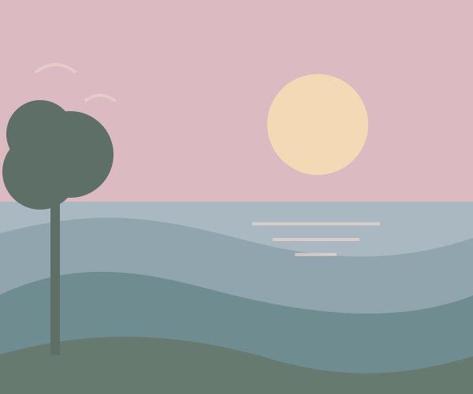
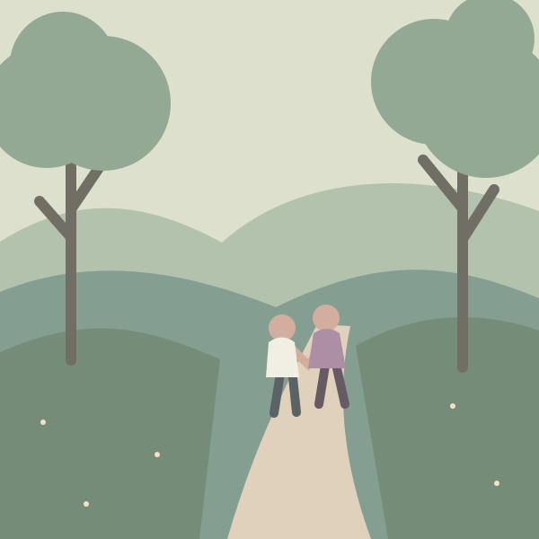
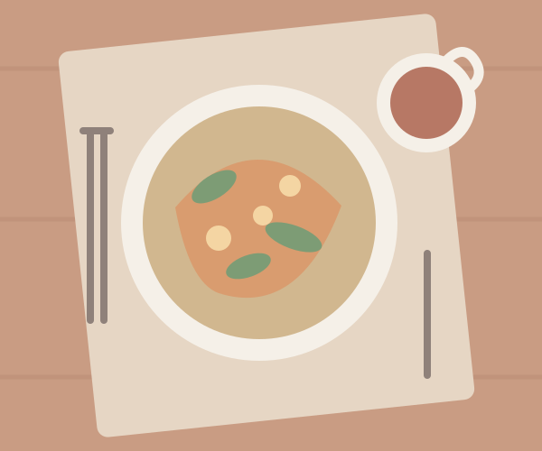

想到什么，就记下来
写下一段话，选好日期，放进照片或视频。补记过去的日子也可以。



日子不必特别，
值得被记住的，是一起。
留给未来的你们
没有复杂的步骤。想起来的时候，就写下一点。
写下一段话，选好日期，放进照片或视频。补记过去的日子也可以。
回忆会按照日期排列。随时翻看、搜索，也可以回来修改。
可以将网页添加到手机主屏幕；成功缓存后，离线也能打开已有内容。
关于你们的数据
网页版先将回忆保存在当前浏览器；同步需要自行配置可用的服务和共享凭证，未配置时不会连接服务，也不会写入微信小程序。
可以导出包含文字、照片和视频的备份文件，再导入另一台设备。记得妥善保管并定期备份。
去记录一条回忆默认不会。两端都配置同一可用同步服务和共享凭证后，才会尝试同步；服务尚需自行部署，冲突需要人工核对。也可通过备份手动转移。
可以在「备份与导入」中选择同次备份的全部 ZIP 分卷，检查预览后手动导入支持的回忆。部分内容不支持，请先阅读导入预览；网页不会写回小程序。
在支持的浏览器中，联网打开并完成缓存后，可以离线打开网页和本机保存的回忆。浏览器可能清理站点数据，请定期导出备份。
OUR LITTLE DAYS ✳
每一个平凡的瞬间，都值得收藏。
正在检查本机同步设置…